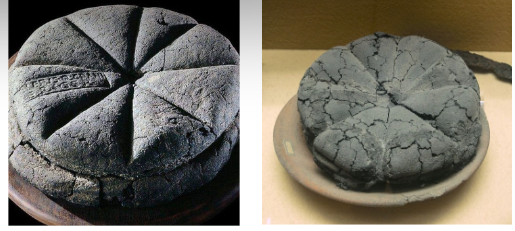
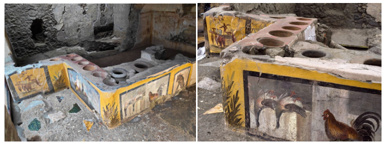
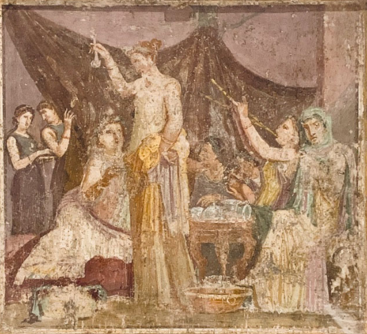

This website explores dining and food in Ancient Rome, and how it was varied based on social class, gender and power. It shows dining as a nuanced activity that changed greatly depending on the environment. Obviously, everyone is familiar with dining and eating, school kids especially with lunch-room politics, it’s something that everyone can relate to. But what you might think as a ‘mundane’ aspect of ancient life is actually deeply meaningful.
It will focus on tackling the generally believed myth in popular culture, that all romans ate reclining in extravagant feasts. I’m sure you’ve all seen these depictions in movies and TV- shows. Through the sub-themes of food and dining etiquette (leisure), and marriage and the household (exploring gender and power), this site will demonstrate that Roman dining and food was incredibly nuanced and played into further societal roles. Dining and food are a complex affair worthy investigation, and an affair that can be reflected in the modern day.
I will show you a mix of ancient textual, visual and modern evidence/sources with analysis to deepen your understanding of the ancient world. There will be a: page focusing on this primary evidence, a blog post - forum discussion between two ancient romans discussing dining, an annotated wall paintings and mosaic analysis page, a quiz – where you can test all that you’ve learnt, and a bibliography – for your further reading.
Subtheme 1, focusing on food and dining etiquette (leisure), will use textual and visual ancient evidence on food, and food divide between social classes, and dining architecture and material culture. It will show that dining in roman society changed based on your social class, that elite populous and the masses had wildly differing food sources and places to eat. You can also relate this back to the everyday complexities of food and dining in the modern world.
Subtheme 2, focusing on marriage and the household, will use textual and visual ancient evidence on gender and power to explore the dining room as a stage for social hierarchy in the Roman World. The evidence showing that reclining on a couch was the performance of the male elite, most women, if present, were often marginalised while enslaved workers made the spectacle possible but were excluded from its benefits. It shows that particularly in elite settings meals were turned into displays of dominance as much as hospitality. Once again something you can relate back to the lunchroom or dinner table politics of your everyday life.
Conclusively this website will take you through a journey of dining and food in the Ancient World. It will contest the idea that all Roman feasts were extravagant affairs and show the complex nuances of dining in the Roman World. And hopefully it’ll show you how your dinner relates to those eaten two thousand years ago.
Food and dining in the Roman world were not merely acts of sustenance but performances of status, morality and identity. The material and literary evidence together shows a society where what one ate, and how, expressed one’s place within a rigid social hierarchy.

Carbonised loaves of bread from Herculaneum and Pompeii

Counters from a “fast food restaurant”, Regio V, Pompeii, 1st cent. CE
Martial, to Rufus (Epigrams 3.82)
“He who would consent to be the guest of Zoilus, would not hesitate to sup with the strumpets of the Summoenium, and drink, without a blush, from the broken pitcher of Leda. This, I contend, would be both easier and more decent. Clothed in an effeminate kind of robe, he lies upon a couch which he wholly covers, and, propped up on purple and silk cushions, thrusts aside his guests with his elbows on this side and that. At hand stands a minion, who hands to his master, ready to vomit, red feathers and toothpicks of lentisc wood; while, if he is oppressed by the heat, a concubine, reclining by his side, waves upon him a pleasant coolness with a green fan; and a young slave scares away the flies with a rod of myrtle, A softener, with nimble art, strokes his whole body, and passes her skilled hand over all his limbs, The signal of snapping his fingers is watched by an eunuch, who presents him with the vessel which his copious draughts render indispensable. Meanwhile Zoilus himself, leaning backwards to the crowd at his feet, among the puppies who are licking up the giblets of geese, divides among his athletes the neck of a wild-boar, or bestows upon his favourite the thigh of a turtle-dove; and while to us is offered wine from Ligurian rocks, or such as has been ripened in the smoke of Marseilles, he hands to his creatures Opimian nectar in crystalline and myrrhine vases; and, while he himself is drenched with essences from the stores of Cosmus, he is not ashamed to divide amongst us in a little gilt shell, unguents such as only the lowest women use. Finally, overcome by many draughts from his large cups, he falls snoring asleep. We sit at the table, and, ordered to keep silence while he is grunting, drink each other's healths by signs. Such is the insolence which we have to endure from this presuming Malchion; nor do we ask to be avenged, Rufus. He has a filthy tongue.”
Cicero, Cat. 2.10
“But if his companions follow him,—if the infamous herd of desperate men depart from the city, O happy shall we be, fortunate will be the republic, illustrious will be the renown of my consulship. For theirs is no ordinary insolence,—no common and endurable audacity. They think of nothing but slaughter, conflagration, and rapine. They have dissipated their patrimonies, they have squandered their fortunes. Money has long failed them, and now credit begins to fail; but the same desires remain which they had in their time of abundance. But if in their drinking and gambling parties they were content with feasts and harlots, they would be in a hopeless state indeed; but yet they might be endured. But who can bear this,—that indolent men should plot against the bravest,—drunkards against the sober,—men asleep against men awake,—men lying at feasts, embracing abandoned women, languid with wine, crammed with food, crowned with chaplets, reeking with ointments, worn out with lust, belch out in their discourse the murder of all good men, and the conflagration of the city?”
Analysis
The charred loaves of bread found in Pompeii and the Herculaneum capture the ordinariness of daily Roman sustenance while also showing the social inequality embedded in food production. We’ve all had bread before; it’s not a fancy meal. The loaves, baked in communal ovens, represent both domestic routine and the labour of the household in the ancient world. They show commercial regulation and social order even in mundane acts like baking, illustrating how Roman households extended into networks of production and dependence. This contrasts with the common myth of elite banquets, where luxury foods displayed wealth and reinforced social stratification.
Another example showing the nuanced dining architecture of Rome are the painted “fast food” counters from Pompeii, they offer a public counterpart to the domestic meal. These street food shops catered to the urban poor and masses who lacked kitchens, underscoring class divisions in dining practice. The vibrant frescoes celebrate food as a spectacle, yet they also reflect the commodification of eating in a densely populated city. Dining here was pragmatic, not performative, it’s a parallel to modern fast food, you go to McDonalds not because you want a delicious 5-star meal but because its easy, available and edible.
Martial in an address to Rufus, exposes the moral tensions of elite dining (Epigrams, 3.82). He contrasts the indulgence of the host with the exhaustion of the enslaved servants, turning the dinner table into a microcosm or metaphor of Roman inequality. His satire highlights not only the cruelty but also the hypocrisy: the refinement of the meal depending on the suffering of others. The banquet becomes a moral test, where urbanitas (refined behaviours) mask moral decay. His displays the other side (elite side) of Roman dining, showing the nuances and complexity of it as an event.
Cicero, in his Catilinarian Orations, similarly associates moral corruption with disordered luxury and unrestrained appetites, condemning Catiline’s followers as gluttonous and effeminate (unmanly, an insult back then) (Cat.2.10). His speech revealing food and dining and moral virtue to be intertwined, particularly within the household and the management of slaves and wives. Moderation in dining mirrored moderation in governance and marriage; indulgence signalled political and domestic disorder. It once again shows the deeper meaning behind the simple act of dining. I bet you didn’t think dinner was this complicated.
It’s a thing that we see in the modern world too, today’s food culture, driven by consumption, labour exploitation and social signalling, echoes Rome’s uneasy relationship between luxury and morality. Whether through fine dining or fast food, the act of eating continues to expose the nuances and complexities that structure society. Think about that next time you’ve got to dress up for a fancy dinner, or get a big mac.
Forum Thread: “On Dining, Decorum, and Domestic Affairs”
This stylized dialogue recreates a short "online" exchange between two Romans discussing their thoughts on dining.
GaiusLoverOfLuxury: "Fellow citizens, I’ve just returned from a banquet that would shame the gods themselves! Silver platters, flamingo tongues, honeyed dormice, a true Apician fare (Apicius, 2009). One cannot live on lentils and virtue alone, as Horace’s dull Nasidienus insists (Horace, Satires.2.8.42–55). I say, a fine dinner 'is' a measure of civilisation. "
ModerateMarciaDomus: "Gaius, your tongue drips with garum and folly. Have you learned nothing from Juvenal? He praises the simple meal, bread and herbs over vulgar opulence (Juvenal, Satires.11.77–88). Your kind forgets the hands that serve those dishes – the slaves sweating in the kitchen, the boys standing sleepless by the couch. "
ModerateMarciaDomus: "I manage a household myself, and the best dinner is one where peace reigns. Even Ovid’s Philemon and Baucis showed greater piety with their cabbage broth than your gilded banquets ever could (Ovid, Met.8.630-678)"
GaiusLoverOfLuxury: "Ah, Marcia, but is it not natural to enjoy the fruits of fortune? As Apicius wrote in his 'Cookery and Dining in Imperial Rome', one must 'know' how to dine (Apicius, 2009). It’s an art – the sauces, the order of the courses, the reclining, the conversation. Even Trimalchio in Petronius’ 'Satyricon' knew that spectacle delights the spirit (Petron. Sat. 35–39.5). "
ModerateMarciaDomus: "Trimalchio? That buffoon? His “art” of dining was gluttony dressed in Gold! (Petron. Sat. 35–39.5). A true Roman household shows moderation – 'temperantia'. The master should dine with dignity, not drown in luxury while his slaves lick crumbs from the floor. The table reveals the soul of the house, the home and the state. "
GaiusLoverOfLuxury: "You sound like Valerius Maximus, ever moralizing! Yes, Jupiter’s festival feasts celebrated abundance – but they also united rich and poor, god and man (Val. Max. 2.1.2.). Jupiter dines reclined on his couch, but Minerva and Juno are also invited to sit; Perhaps there’s room for both your humble cabbage and my flamingo tongue. "
ModerateMarciaDomus: "Then Let us agree: the Roman table reflects all Rome, its slaves and senators, its piety and pride. Whether in a smoky kitchen or a marble triclinium, dining binds us in custom and contradiction alike. "
Forum Moderator(anonymous): "Ah, the eternal feast of debate – some things never change. Even today, our tables still mirror our morals."
Wall Paintings & Mosaics
The visual record of Roman dining – from the frescoes of Pompeii to mosaics from North Africa – reveal a world far more nuanced than the familiar image of elite Roman’s reclining in luxury. Together these four annotated scenes illustrate the range of experiences and meanings embedded in the act of dining.
Banquet Scene: Wall fresco, 40-79 CE, Pompeii, House of the Triclinium. The House of the Triclinium fresco, with its convivial group and elegant atmosphere, captures the social warmth and artistry of communal dining rather than pure ostentation or indulgence. It also shows hierarchical positioning, the host occupying the central couch whilst guests recline on either side, demonstrating social status through spatial arrangement.Labour & Service: Marble mosaic, 2nd century CE, Roman Carthage. The Carthage mosaic shows the labour that sustained Roman hospitality. The depicted slave, delicately balancing food on a tray, embodies the infrastructure of servitude behind every elegant feast. His poised stance reflects the discipline and grace expected of domestic slaves, who were trained to uphold their master’s dignity through their silence and precision. Dining etiquette, therefore, was not only about how the elite behaved but also about how enslaved peoples were manoeuvred within the household’s moral and aesthetic order.
Intimate Dining: Fresco panel (P6), Casa dei Casti Amanti (IX.12.6–7), Pompeii. In the Casa dei Casti Amanti fresco, diners recline on couches in a refined yet intimate setting. The careful rendering of tableware and gesture suggests civility and restraint rather than indulgence. These details remind us that elite dining was as much about demonstrating decorum, self-control, balance and hierarchy, as it was about pleasure. The household meal functioning as a microcosm of Roman society: ordered, hierarchical, and gendered, yet bound by shared ritual.

Gender & Dining: The all-female dinner party fresco disrupts expectations entirely. By portraying women reclining and drinking without male supervision, it complicates the conventional association between banqueting and male sociability. This image displays toward spaces of female autonomy and friendship, rarely acknowledged in Roman literature. This humanisation of the Roman dining scene is echoed in some literary texts such as Plautus’s ‘In Amphritruo’ where a rare moment of intimacy is staged (Plaut. Am. 804, cf. 735). It shows a couple reclining together, a gesture both domestic and dignified. Reclining during meals was a privilege usually reserved for elite men, yet Alcmena’s participation marks her as a moral equal within marriage, showing the Roman dining scene could also be a site of affection, negotiation, and relationships.
Key Takeaways
Taken together, these artworks dismantle the myth of a universal extravagant Roman dining experience. Most Roman dining was domestic, modest, and deeply moralised, a performance of identity rather than that of excess. It was a place where power, gender and class were continuously negotiated and reinforced. In modern society, dining still performs similar functions: family dinners, school lunches, and social gatherings remain stages for negotiating relationships, hierarchy and belonging. The Roman table, whether adorned with Peacock or humble cabbage, reminds us that eating together has always been a mirror of humanity’s shared need for connection.
Bibliography & About Me
About Me
I’m Rehan Keane a student at the University of Queensland completing a bachelor’s degree in Advanced Humanities with a major in Ancient History. I hope to use my knowledge to show that learning about the ancient world can be engaging, fun and meaningful, and to show how it can teach us about the present. I want to show that it is not simply the dull memorisation of facts, but the engaging analysis and learning about life in the ancient world.
Bibliography
Apicius. (trans. Vehling, J.D). 2009. Cookery and Dining in Imperial Rome. Project Gutenberg.
Beacham, R.C. and Denard, H. 2023. ‘Triclinium Theatricality’, in Living Theatre in the Ancient Roman House: Theatricalism in the Domestic Sphere, Cambridge: Cambridge University Press, 426–483.
Cicero. (trans. Stuart, G). 1905. Cicero’s four orations against Catiline. Hinds, Noble & Eldredge.
De Angelis, F. et al. 2020. Food at the heart of the Empire: dietary reconstruction for Imperial Rome inhabitants. Archaeological and Anthropological Sciences, 12(10), Article 244. https://doi.org/10.1007/s12520-020-01194-z
Donohue, J. 2015. ‘Roman Dining’ in J. Wilkins, and R. Nadeau, (ed) A Companion to Food in the Ancient World, Newark: Wiley, 253-264.
Garnsey, Peter. 1999. ‘You Are With Whom You Eat,’ in Food and Society in Classical Antiquity, Cambridge and New York: Cambridge University Press.
Horace. (trans. Alexander, S). 2016. The Complete Odes and Satires of Horace (S. Alexander, Ed.; Vol. 126). Princeton University Press. https://doi.org/10.1515/9781400884117
Hudson, N. F. 2010. ‘Changing Places: The Archaeology of the Roman “Convivium”,’ American Journal of Archaeology 114.4: 663–695.
Juvenal. (trans. Anthon C). 1857. The Satires of Juvenal and Persius / with English notes, critical and explanatory, from the best commentators, by Charles Anthon. Harper & Brothers.
Martial. (trans. Francis, A.L. and Tatum, H.F). 1924. Martial’s epigrams. Cambridge University Press.
Murphy, C. 2017. Pompeii, a fully urban society: charting diachronic social and economic changes in the environmental evidence.
Ovid (trans. Fantham, E). 2004. Ovid’s Metamorphoses. Oxford University Press.
Petronius. (trans. Warmington, E. H).1913. Satyricon (M. Heseltine & W. H. D. Rouse, Trans.; New edition / revised by E.H. Warmington.). Harvard University Press.
Plautus. (trans. Echard, L.). 1716. Plautus’s comedies, amphitryon, epidicus, and rudens, made English With critical remarks upon each play. By Laurence Echard M.A (The second edition corrected.). Printed for Timothy Child at the White-Hart in St. Paul’s Church-yard, and William Taylor at the Ship in Pater-noster-Row.
Roller, M. B. 2017. Dining Posture in Ancient Rome: Bodies, Values, and Status, United States: Princeton University Press.
Valerius Maximus. (trans. Wardle, D). 2016. Valerius Maximus: memorable deeds and sayings. Book 1. Oxford University Pres.
Images List
Mosaic depicting salve carrying food, marble, 2nd century CE, Roman Carthage, North Africa
Dining panel (P6), casa dei Casti Amanti (IX.12.6–7), Pompeii, east wall of triclinium. Detail. Author photo